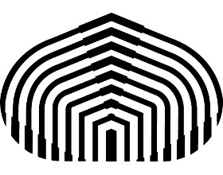
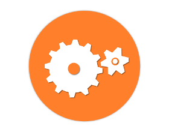
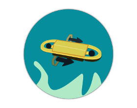
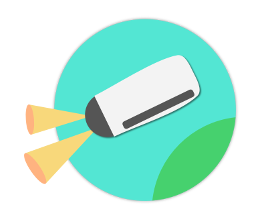
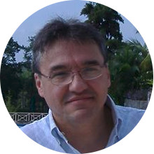
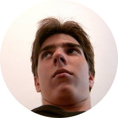

X-Sub vehículo submarino teleoperado
Proyecto de diseño y construcción de un ROV submarino pequeño de alta autonomía elaborado por estudiantes y profesores de la Universidad Simón Bolívar como programa de investigación y desarrollo de manera interdiciplinaria con el objetivo de innovar, fomentar y consolidar conocimentos tecnológicos inspirados en anteriores proyectos realizados en el campus universitario y en la comunidad internacional.
-

Universidad Simón Bolívar
En X-Sub se trabaja en diversos proyectos de investigación en diversas áreas de ingeniería: mecánica, computación, electrónica de potencia, circuitos electrónicos, comunicaciones, transferencia de energía, entre otros.
-

Formamos parte de Mecatrónica USB
El Grupo de Investigación y Desarrollo en Mecatronica trabaja en el desarrollo de soluciones basadas en la integración de conocimientos de las areas de automática y control, computación, inteligencia artificial, mecánica y electrónica.
-

Estudiantes y profesores
Integrantes y desarrolladores del proyecto que emplean sus conocimientos para la implentación e innovación tecnológica en el desarrollo de submarinos rov.
-

Poseibot
Primer submarino desarrollado por Mecatrónica para la inspección de tuberías de forma autónoma. Conocimientos utilizados en el actual proyecto del ROV.
-

Filosofía de X-Sub
La filosofía de diseño del X-Sub busca optimizar recursos tanto energéticos como de procesamiento para obtener una máxima eficiencia sin comprometer su capacidad de expansión, modularidad y confiabilidad. Busca ser simple, económico y versátil.
Características del proyecto
pcDuino Lite ARM Cortex A10 512 MB.
MCU Freescale ColdFire MCF51QE128 32 bits.
IMU 6 DOF, magnetómetro, sensor de velocidad lineal por termistores.
Sensor de presión 700 KPA, termómetro, detector de humedad.
Webcam Microsoft HD con servomotores de pan y tilt.
2 Leds de alta intensidad de 1W.
Batería PbO2 12V 5000mAH.
Fuente de resonancia Full bridge 400W.
Línea de transmisión 10AWG.
Sistema de protección de sobrecorriente.
4 motores brushless turnigy 1000KV con 4 ESC HK 30A.

Comunicación mediante cable ethernet 100Mbps CATE6.
Sistema de telemetría y control a través de ROS.
Capacidad de implementación de algoritmos de alto nivel para aplicaciones variadas. Interzas gráfica del sistema de monitoreo.

Exploración de sistemas biológicos marinos.
Detección de fallas en tuberías, líneas de transmisión y cascos marinos.
Mapeo del fondo marino.
Caracterización climatológica.
Exploración de cuevas y lugares submarinos de dificil acceso.
-

José Cappelletto
Coordinador de Electrónica
-

Gerardo Fernández
Presidente de Averod
-

Ricardo Marques
Estudiante